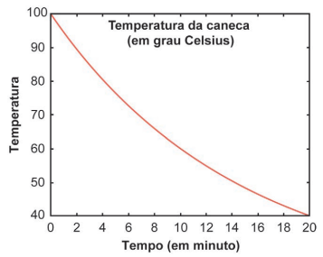
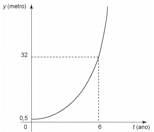

(Enem 2024)Uma caneca com água fervendo é retirada de um forno de micro-ondas. A temperatura \(T\), em grau Celsius, da caneca, em função do tempo \(t\), em minuto,
pode ser modelada pela função \(T(t) = a + 80 b^t\) , representada no gráfico a seguir.

Os valores das constantes \(a\) e \(b\) são ?
(Enem 2016)Admita que um tipo de eucalipto tenha expectativa de crescimento exponencial, nos primeiros anos após seu plantio, modelado pela função \(y(t) = a^{t -1}\),
na qual y representa a altura da planta em metro, \(t\) é considerado em ano, e \(a\)
é uma constante maior que 1 . O gráfico representa a função \(y\).

(Enem 2023)Em um pronto-socorro, um paciente ingeriu, à meia-noite, um comprimido que continha 800 mg de uma medicação. O médico, ao liberar o paciente,
informou que, caso ele voltasse a sentir dores, deveria tomar outro comprimido daquele, no máximo três vezes, nas próximas 24 horas, dependendo das
recomendações da bula. Como o paciente voltou a sentir dores ao chegar em casa, ainda na madrugada, decidiu seguir a orientação do médico e leu a bula
do remédio. O paciente verificou que, a cada 6 horas, a quantidade dessa medicação no organismo se reduzia à metade da quantidade anterior. Observou também
a recomendação de que a pessoa deveria, preferencialmente, ingerir um novo comprimido quando a quantidade de medicação no organismo estivesse compreendida
entre 200 mg e 100 mg.
Seguindo as informações e recomendações da bula, em que período(s) do dia o paciente deveria tomar novamente o remédio?
(Enem 2023)Um tipo de célula se reproduz constantemente por divisão celular, triplicando sua quantidade a cada duas horas, sob condições ideais de proliferação.
Suponha uma quantidade inicial \(Q_0\) dessas células sob as condições ideais de proliferação durante um certo período.
Qual a representação algébrica da quantidade \(Q\) dessas células em função do tempo \(t\), em hora, nesse período?
Quando uma matéria é radioativa, é comum que a sua massa se desintegre, no decorrer do tempo, de forma exponencial. O césio 137, por exemplo, possui
meia-vida após 30 anos, ou seja, se havia, inicialmente, uma massa \(m_0\) de césio, após 30 anos, haverá metade de m0. Para descrever melhor essa situação,
temos a função exponencial:
$$f(x) = \frac{m_0}{2}$$
x→ quantidade de meias-vidas
\(m_0\) → massa inicial
\(f(x)\) → massa final
Pensando nisso, se houver 80 gramas de césio 137, inicialmente, após 150 anos, haverá um total de:
A) 2,0 gramas
B) 2,5 gramas
C) 3,0 gramas
D) 3,5 gramas
E) 5,0 gramas
$$Q(t) = Q_0 \cdot a^{\frac{t}{p}}$$
onde \(Q(t)\) e resulta do função
\(Q_0\) é o valor inicial
e \(a\) é a pontencia se esta duplicando triplicando e etc...